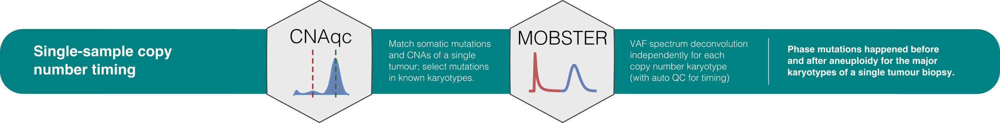

Input requirements.
c('2:0', '2:1', '2:2') (default);Pipeline skeletons.
evoverse to determine QC PASS/ FAIL status per karyotype;mobster’s default parameters;Example input data from the example CNAqc dataset
# Use example data in the CNAqc package
data(example_dataset_CNAqc, package = 'CNAqc')
pipeline = pipeline_chromosome_timing(
mutations = CNAqc::example_dataset_CNAqc$snvs, # Somatic mutations
cna = CNAqc::example_dataset_CNAqc$cna, # Copy number segments
purity = CNAqc::example_dataset_CNAqc$purity, # Sample purity
reference = 'GRCh38', # Genome reference
N_max = 10000, # Downsample karyotypes with > 10K mutations (none here)
min_muts = 150, # Minimum number of mutations per karyotype
min_VAF = 0.05, # Minimum VAF
description = "Example timing dataset", # Dataset description
auto_setup = 'FAST' # Ellipsis (parameters forwarded to each mobster first run)
)
#> [ Evoverse Chromosomal timing pipeline ]
#> ℹ Loading input data
#>
#>
── Preparing input for deconvolution ─────────────────────────────────────────────────────────────────
#> ℹ Loading input data
#>
ℹ Removing 80 mutations with VAF < 0.05.
#> ℹ Loading input data
#> [ CNAqc - CNA Quality Check ]
#>
ℹ Using reference genome coordinates for: GRCh38.
#> ℹ Loading input data
ℹ Drivers are annotated, but 'gene' column is missing, using mutation location.
#> ℹ Loading input data
! Missing CCF column from CNA calls, adding CCF = 1 assuming clonal CNA calls.
#> ℹ Loading input data
ℹ Input n = 13053 mutations for 267 CNA segments (267 clonal, 0 subclonal)
#> ℹ Loading input data
x n = 172 mutations cannot be mapped to segments and will be removed.
#> ℹ Loading input data
#>
✓ Mapped n = 12881 mutations to clonal segments (100% of input)
#> ℹ Loading input data
── [ CNAqc ] n = 12881 mutations in 267 segments (267 clonal + 0 subclonal). Genome reference: GRCh38
#> ℹ Loading input data
#>
#> 2:2 [n = 7437] ■■■■■■■■■■■■■■■■■■■■■■■■■■■ { chr19:15292495:15292496:G:A }
#> 4:2 [n = 1873] ■■■■■■■
#> 3:2 [n = 1612] ■■■■■■
#> 2:1 [n = 1557] ■■■■■■ { chr2:179431633:179431634:C:T }
#> 3:0 [n = 310] ■
#>
ℹ Sample Purity: 89% ~ Ploidy: 4.
#> ℹ Loading input data
#>
ℹ Mutations annotated have 3 drivers.
#> ℹ Loading input data
✓ Loading input data ... done
#>
#> ── MOBSTER clustering mutations with karyotype 2:0 ───────────────────────────────────────────────────
#>
#> [ CNAqc - CNA Quality Check ]
#> ℹ Using reference genome coordinates for: GRCh38.
#> ℹ Input n = 12881 mutations for 9 CNA segments (9 clonal, 0 subclonal)
#> Warning in map_mutations_to_segments(snvs, cna %>% filter(CCF == 1)): [CNAqc] a
#> karyotype column is present in CNA calls, and will be overwritten
#> x n = 12800 mutations cannot be mapped to segments and will be removed.
#> ✓ Mapped n = 81 mutations to clonal segments (100% of input)
#> ! Less than 150 mutations, will no fit.
#>
#> ── MOBSTER clustering mutations with karyotype 2:1 ───────────────────────────────────────────────────
#>
#> [ CNAqc - CNA Quality Check ]
#> ℹ Using reference genome coordinates for: GRCh38.
#> ℹ Input n = 12881 mutations for 49 CNA segments (49 clonal, 0 subclonal)
#> Warning in map_mutations_to_segments(snvs, cna %>% filter(CCF == 1)): [CNAqc] a
#> karyotype column is present in CNA calls, and will be overwritten
#> x n = 11324 mutations cannot be mapped to segments and will be removed.
#> ✓ Mapped n = 1557 mutations to clonal segments (100% of input)
#> [ MOBSTER fit ]
#> ✔ Loaded input data, n = 1557.
#> ❯ n = 1557. Mixture with k = 1,2 Beta(s). Pareto tail: TRUE and FALSE. Output clusters with π > 0.02
#> and n > 10.
#> ! mobster automatic setup FAST for the analysis.
#> ❯ Scoring (without parallel) 2 x 2 x 2 = 8 models by reICL.
#> ℹ MOBSTER fits completed in 6.1s.
#> ── [ MOBSTER ] Raw VAF for 2:1 n = 1557 with k = 1 Beta(s) without tail ──────────────────────────────
#> ● Clusters: π = 100% [C1], with π > 0.
#> ✖ No tail fit.
#>
#> ● Beta C1 [n = 1557, 100%] with mean = 0.42.
#> ℹ Score(s): NLL = -660.35; ICL = -1298.65 (-1298.65), H = 0 (0). Fit interrupted by MM in 100 steps.
#> Warning: Unknown or uninitialised column: 'Scale'.
#> Warning: Unknown or uninitialised column: 'Shape'.
#> Warning: Unknown or uninitialised column: 'Scale'.
#> Warning: Unknown or uninitialised column: 'Shape'.
#> x Raw VAF for 2:1: QC FAIL. p = 0
#>
#>
#> ┌──────────────────────────────────────────────────────────────────────────────────────┐
#> │ │
#> │ Auto-QC (type 'T') failed, attempting another single run with default parameters │
#> │ │
#> └──────────────────────────────────────────────────────────────────────────────────────┘
#> [ MOBSTER fit ]
#> ✔ Loaded input data, n = 1557.
#> ❯ n = 1557. Mixture with k = 1,2,3 Beta(s). Pareto tail: TRUE and FALSE. Output clusters with π >
#> 0.02 and n > 10.
#> ❯ Custom fit by Moments-matching in up to 250 steps, with ε = 1e-10 and peaks initialisation.
#> ❯ Scoring (without parallel) 5 x 3 x 2 = 30 models by reICL.
#> ℹ MOBSTER fits completed in 51.7s.
#> ── [ MOBSTER ] Raw VAF for 2:1 n = 1557 with k = 2 Beta(s) and a tail ────────────────────────────────
#> ● Clusters: π = 53% [C2], 43% [C1] and 4% [Tail], with π > 0.
#> ● Tail [n = 50, 3.8%] with alpha = 1.2.
#> ● Beta C1 [n = 677, 43%] with mean = 0.6.
#> ● Beta C2 [n = 830, 53%] with mean = 0.31.
#> ℹ Score(s): NLL = -1284.16; ICL = -2436.76 (-2496.86), H = 65.41 (5.31). Fit converged by MM in 42
#> steps.
#> ✓ Raw VAF for 2:1: QC PASS. p = 0.993
#>
#> ── MOBSTER clustering mutations with karyotype 2:2 ───────────────────────────────────────────────────
#>
#> [ CNAqc - CNA Quality Check ]
#> ℹ Using reference genome coordinates for: GRCh38.
#> ℹ Input n = 12881 mutations for 80 CNA segments (80 clonal, 0 subclonal)
#> Warning in map_mutations_to_segments(snvs, cna %>% filter(CCF == 1)): [CNAqc] a
#> karyotype column is present in CNA calls, and will be overwritten
#> x n = 5444 mutations cannot be mapped to segments and will be removed.
#> ✓ Mapped n = 7437 mutations to clonal segments (100% of input)
#> [ MOBSTER fit ]
#> ✔ Loaded input data, n = 7434.
#> ❯ n = 7434. Mixture with k = 1,2 Beta(s). Pareto tail: TRUE and FALSE. Output clusters with π > 0.02
#> and n > 10.
#> ! mobster automatic setup FAST for the analysis.
#> ❯ Scoring (without parallel) 2 x 2 x 2 = 8 models by reICL.
#> ℹ MOBSTER fits completed in 8.8s.
#> ── [ MOBSTER ] Raw VAF for 2:2 n = 7434 with k = 2 Beta(s) and a tail ────────────────────────────────
#> ● Clusters: π = 86% [C1], 8% [C2] and 5% [Tail], with π > 0.
#> ● Tail [n = 335, 5.5%] with alpha = 1.3.
#> ● Beta C1 [n = 6440, 86%] with mean = 0.46.
#> ● Beta C2 [n = 659, 8%] with mean = 0.23.
#> ℹ Score(s): NLL = -9480.88; ICL = -18514.11 (-18847.52), H = 367.42 (34.02). Fit converged by MM in
#> 56 steps.
#> ✓ Raw VAF for 2:2: QC PASS. p = 0.905
#> ℹ Pipeline results assembly
#>
✓ Pipeline results assembly ... doneS3 output object
print(pipeline)
#> ── [ Evoverse ] Example timing dataset Chromosome timing pipeline ────────────────────────────────────
#> ── [ CNAqc ] n = 12881 mutations in 267 segments (267 clonal + 0 subclonal). Genome reference: GRCh38
#>
#> 2:2 [n = 7437] ■■■■■■■■■■■■■■■■■■■■■■■■■■■ { chr19:15292495:15292496:G:A }
#> 4:2 [n = 1873] ■■■■■■■
#> 3:2 [n = 1612] ■■■■■■
#> 2:1 [n = 1557] ■■■■■■ { chr2:179431633:179431634:C:T }
#> 3:0 [n = 310] ■
#> ℹ Sample Purity: 89% ~ Ploidy: 4.
#> ℹ Mutations annotated have 3 drivers.
#> ── QC PASS ────────────────────────────────────────────────────────────────────── PASS rate (%): ──
#> # A tibble: 2 x 4
#> karyotype QC QC_prob QC_type
#> <chr> <chr> <dbl> <chr>
#> 1 2:1 PASS 0.993 timing_logistic_GEL_CRC
#> 2 2:2 PASS 0.905 timing_logistic_GEL_CRC
#>
#> LOG 2020-04-25 19:29:18. evoverse pipeline for chromosome timing: with fits TRUEOutput fields
# MOBSTER fits per karyotype
print(pipeline$mobster)
#> $`2:1`
#> ── [ MOBSTER ] Raw VAF for 2:1 n = 1557 with k = 2 Beta(s) and a tail ────────────────────────────────
#> ● Clusters: π = 53% [C2], 43% [C1] and 4% [Tail], with π > 0.
#> ● Tail [n = 50, 3.8%] with alpha = 1.2.
#> ● Beta C1 [n = 677, 43%] with mean = 0.6.
#> ● Beta C2 [n = 830, 53%] with mean = 0.31.
#> ℹ Score(s): NLL = -1284.16; ICL = -2436.76 (-2496.86), H = 65.41 (5.31). Fit converged by MM in 42
#> steps.
#>
#> $`2:2`
#> ── [ MOBSTER ] Raw VAF for 2:2 n = 7434 with k = 2 Beta(s) and a tail ────────────────────────────────
#> ● Clusters: π = 86% [C1], 8% [C2] and 5% [Tail], with π > 0.
#> ● Tail [n = 335, 5.5%] with alpha = 1.3.
#> ● Beta C1 [n = 6440, 86%] with mean = 0.46.
#> ● Beta C2 [n = 659, 8%] with mean = 0.23.
#> ℹ Score(s): NLL = -9480.88; ICL = -18514.11 (-18847.52), H = 367.42 (34.02). Fit converged by MM in
#> 56 steps.
# Clustering assignments
print(pipeline$table$clustering_assignments)
#> # A tibble: 8,991 x 20
#> chr from to ref alt FILTER DP NV VAF ANNOVAR_FUNCTION
#> <chr> <dbl> <dbl> <chr> <chr> <chr> <dbl> <dbl> <dbl> <chr>
#> 1 chr2 3.58e5 3.58e5 C A PASS 104 58 0.558 intergenic
#> 2 chr2 9.09e5 9.09e5 A G PASS 15 7 0.467 ncRNA_intronic
#> 3 chr2 1.04e6 1.04e6 C T PASS 93 57 0.613 intronic
#> 4 chr2 1.33e6 1.33e6 A T PASS 104 55 0.529 intronic
#> 5 chr2 1.52e6 1.52e6 C T PASS 90 50 0.556 intronic
#> 6 chr2 2.20e6 2.20e6 G T PASS 125 42 0.336 intronic
#> 7 chr2 2.90e6 2.90e6 C T PASS 109 58 0.532 downstream
#> 8 chr2 3.13e6 3.13e6 A G PASS 134 35 0.261 ncRNA_intronic
#> 9 chr2 3.83e6 3.83e6 A T PASS 120 68 0.567 intergenic
#> 10 chr2 3.88e6 3.88e6 T A PASS 126 10 0.0794 intergenic
#> # … with 8,981 more rows, and 10 more variables: GENE <chr>, is_driver <lgl>,
#> # driver_label <chr>, gene <chr>, karyotype <chr>, segment_id <chr>,
#> # mobster_cluster <chr>, Tail <dbl>, C1 <dbl>, C2 <dbl>
# Summary QC
print(pipeline$table$summary)
#> # A tibble: 2 x 43
#> K_beta Mean_C1 Mean_C2 Mean_Tail N N_C1 N_C2 N_Tail pi_C1 pi_C2 pi_Tail
#> <int> <dbl> <dbl> <dbl> <int> <dbl> <dbl> <dbl> <dbl> <dbl> <dbl>
#> 1 2 0.601 0.305 0.300 1557 677 830 50 0.433 0.529 0.0385
#> 2 2 0.462 0.228 0.226 7434 6440 659 335 0.863 0.0827 0.0546
#> # … with 32 more variables: rcc_C1 <lgl>, rcc_C2 <lgl>, rcc_Tail <lgl>,
#> # Scale_Tail <dbl>, Shape_Tail <dbl>, tail <lgl>, Variance_C1 <dbl>,
#> # Variance_C2 <dbl>, Variance_Tail <dbl>, NLL <dbl>, BIC <dbl>, AIC <dbl>,
#> # entropy <dbl>, ICL <dbl>, reduced.entropy <dbl>, reICL <dbl>, size <dbl>,
#> # sse_total <dbl>, sse_0_0.1 <dbl>, sse_0.1_0.2 <dbl>, sse_0.2_0.3 <dbl>,
#> # sse_0.3_0.4 <dbl>, sse_0.4_0.5 <dbl>, sse_0.5_0.6 <dbl>, sse_0.6_0.7 <dbl>,
#> # sse_0.7_0.8 <dbl>, sse_0.8_0.9 <dbl>, sse_0.9_1 <dbl>, QC <chr>,
#> # QC_prob <dbl>, QC_type <chr>, karyotype <chr>One-page plotting function (assembles a multi-panel figure)